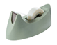

Shimmy is a Compaq Proliant 800 server donated to us by IMM. It is a dual 200 MHz Pentium Pro machine with 512 MB of RAM and about 50 GB of RAID 5 storage.
Shimmy is planned to be our main user machine, however we are currently trying to work around some possible hardware problems.